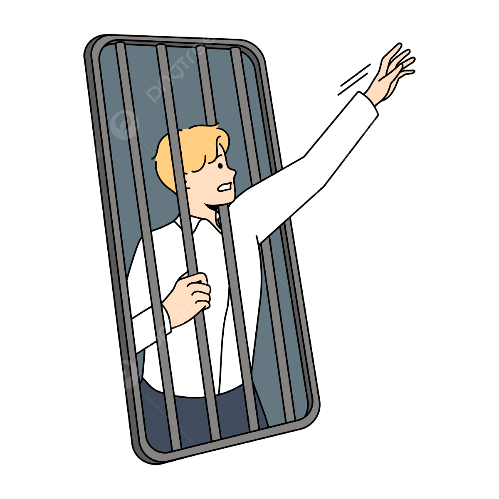

Sosyal Medya Bağımlılığı
Sosyal medya günümüzde önemli bir sorun haline geldi işte bunu düzelmek için buradayız:
Sosyal Medya Neden Bağımlılık Yaratır?
- Sosyal medya, anlık bildirimler ve beğenilerle beynin ödül sistemini sürekli tetikleyerek dopamin salgılanmasına yol açtığı için bağımlılık yaratır.
- İnsanların sosyal çevrelerindeki veya dünyadaki gelişmeleri kaçırma korkusu, uygulamayı sürekli kontrol etme ihtiyacı doğurarak bir bağımlılık yaratır
Bağımlılığın Zararları
- Uyku düzenini bozabilir ve yorgunluk yaratabilir.
- Gerçek hayattaki sosyal ilişkileri zayıflatabilir ve yalnızlık hissi yaratabilir.
- Özgüven kaybına ve depresyon gibi ruhsal sorunlara yol açabilir.
Bağımlılığı Nasıl Önleriz?
- Sosyal medya kullanımını sınırlamak için belirli zaman dilimleri belirleyin ve bu süreleri aşmamaya özen gösterin.
- Bildirimleri kapatın veya sessize alın, böylece sürekli olarak uygulamayı kontrol etme ihtiyacı azalır.
- Gerçek hayattaki sosyal etkileşimlere öncelik verin ve yüz yüze iletişimi teşvik edin.
- Hobiler ve fiziksel aktiviteler gibi alternatif uğraşlar bulun, böylece sosyal medyaya olan bağımlılık azalır.
